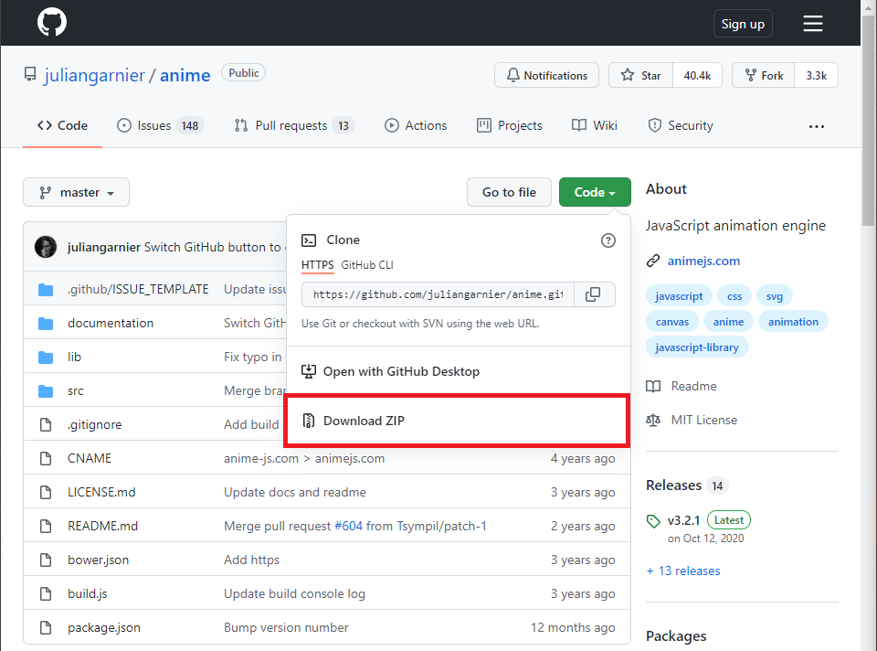
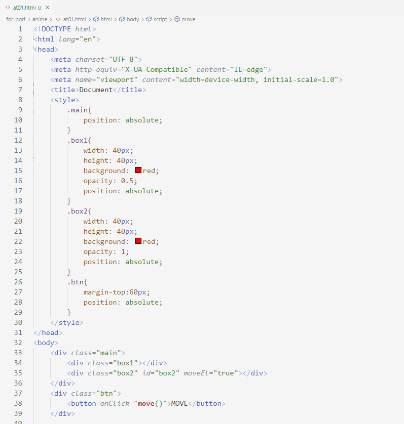
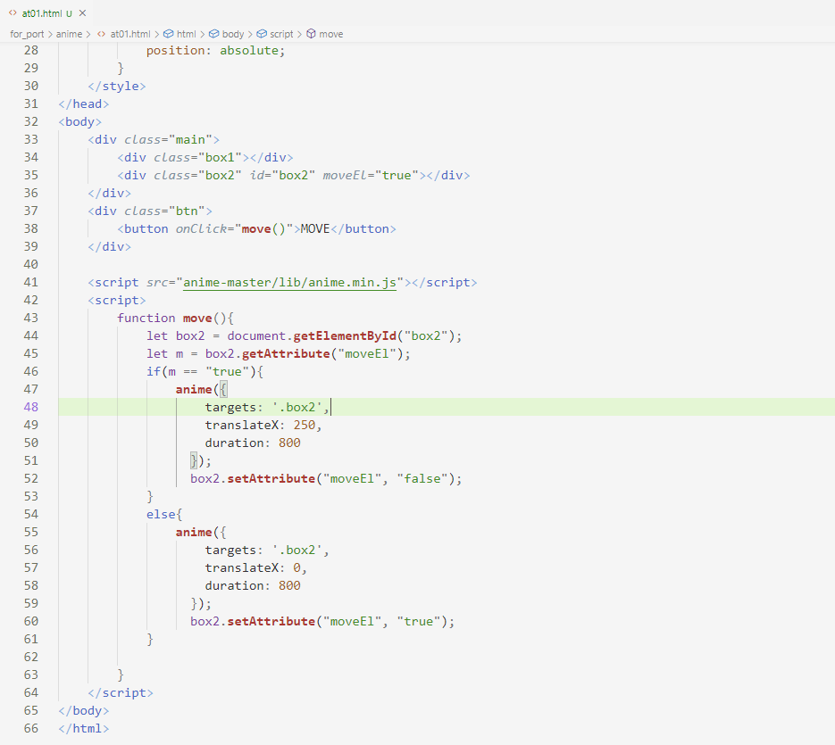
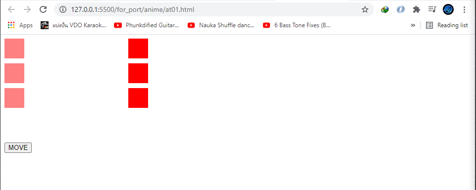

Anime.js
Anime.js คือ web site ที่ให้บริการเรื่อง animation หรือ effect ต่างๆ ซึ่งเราสสมารถเข้าไป download ได้ที่ url https://github.com/juliangarnier/anime/ เมื่อคลิ๊กเข้าไปจะเป็น web site GitHub ให้เลือกที่ code และ เลือกที่ Download ZIP ดังรูปด้านล่าง

เมื่อ download เสร็จแล้วให้ทำการ unzip ไว้ใน project ที่เราต้องการจะใช้ ต่อมาจะเป็นการทดสอบใช้ anime ตาม document ใน web site ดังกล่าว


ในโค้คือการสร้าง div สีแดงขนาด 40 x 40 px ขึ้นมาเพื่อทดสอบโดยการถ้ากดปุ่ม move จะไปทำงานที่ function move ซึ่งด้านในจะเป็นการทดลองใช้ anime ให้เกิด animation ขยับ div box2 ไปทางด้านขวา 250 px ผลลัพธิ์ที่ได้คือรูปด้านล่าง

ถือว่าผลลัพธฺืออกมาถูกต้องแสดงว่าเราได้ทำการติดตั้ง anime ได้ถูกต้องและพร้อมใช้งานแล้วต่อไปจะเป็นการลองทำกับ หลายๆ Element เพราะในการทำงานจริงอาจต้องการให้เกิด animation มากกว่า 1 object

โค้ดด้านบนคือทำการปรับ display ให้ div อยู่ในตำแหน่งที่ต้องการ ทำให้ตรวจสอบผลลัพธิ์ได้ง่ายขึ้น ต่อมาก็ทำการเพิ่ม div เข้าไปเพื่อทดสอบว่าถ้ามีมากกว่า 1 div จะทำงานได้หรือไม่

ผลลัพธิ์ที่ได้คือยังสามารถทำงานได้อย่างปกติดีซึ่งหลังจากนี้ก็สามารถนำไปใช้กับ project ที่ต้องการได้ นอกจากนี้ยังมี animation อีกหลายรูปแบบให้เลือกใช้ภายใน web site ซึ่งการใช้ amine นี้ทำให้ประหยัดเวลาการเขียนโค้ดเรื่อง animation ได้เป็นอย่างดี
